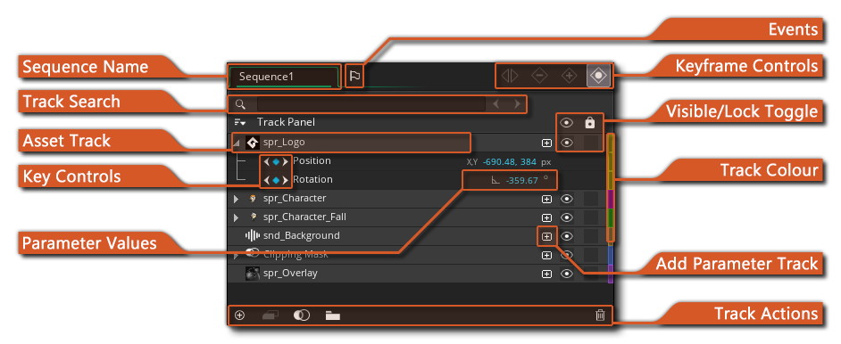
What your sequences do are governed by the assets and parameters that have been added to the Track Panel. You can add a track to the editor by either:
- dragging an asset into the sequence Canvas
- dragging an asset into the Track Panel itself
- by clicking the "Add Asset" 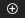 button at the bottom of the Track Panel.
This last method will open the Asset Explorer for you where you can choose the asset to add.
Regardless of the method you choose, a new Asset Track
will be made for the asset. This track is the main track for the
asset in the sequence and will have a corresponding key
track created for the asset in the Dope Sheet at the playhead
position:
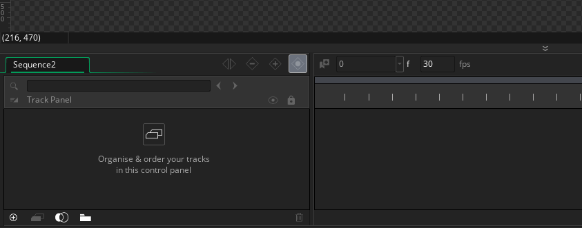
Note that the colour of the Asset Key in the Dope Sheet can be set from the Track Panel by clicking the coloured bar at the end. This will open up the Colour Picker where you can choose which colour to use for the key tracks in the Dope Sheet.
Each asset in the track editor can also have a set of Parameter Tracks added to it. These tracks are what control the various different properties (parameters) that can be modified for the track over time. The different parameters available are covered in depth in the section on "Adding Parameter Tracks" further down this page, but to give you an idea of what's available here is a brief list:
- All Assets: Position and rotation.
- Sounds: Pitch and Volume.
- Sequences: Origin and Scale.
- Sprites and Objects: Origin, Scale, Image Index, Image Speed, Colour Add and Colour Blend.
To add a parameter track in the editor you can enable
"Automatically Record Changes"  in the Track Panel, which will
then add parameter keys for any changes you make to an asset in the
Canvas at the current playhead position, as shown here:
in the Track Panel, which will
then add parameter keys for any changes you make to an asset in the
Canvas at the current playhead position, as shown here:
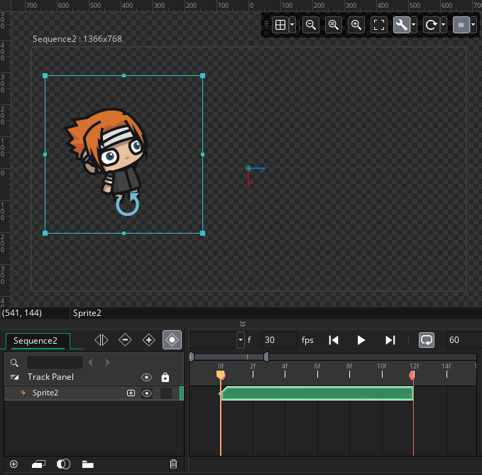
Alternatively, you can click the "Add Parameter Track"
button, which will open up a menu
showing you the different options available: 
Selecting any option from this menu, or recording directly from the IDE, will create one or more parameter tracks underneath the main asset track, and also add a parameter key to the Dope Sheet, coloured the same as the main asset track colour: 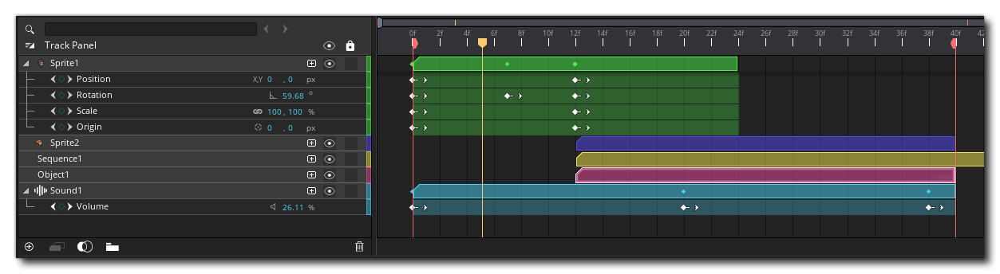
Once you add a parameter track to your main asset track, the
dope sheet will have a coloured bar to show the length of the asset
track in frames, and there will be parameter keys added at
the points where you want a change in the parameter to occur. These
keys can be seen in the above image as simple "dots" on a frame.
When a track has parameter keys like this, the parameter they refer
to will be interpolated by default between each of the points
shown. For example, if you have a rotation parameter and at frame 0
it is set to 90° then at frame 30 it is 180°, then at frame 15 it
will be 135°. You can actually see the change in values over time
by selecting the parameter track and then "scrubbing" the playhead
in the dope sheet:
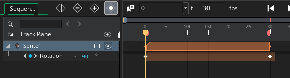
Note that for all parameter tracks you can disable the default
linear interpretation between different keys from the right mouse
button  menu on the parameter track, which
means that transitions between parameter values will occur
instantly on the given frame rather than gradually over time:
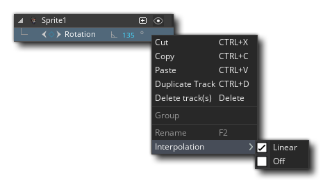
menu on the parameter track, which
means that transitions between parameter values will occur
instantly on the given frame rather than gradually over time:
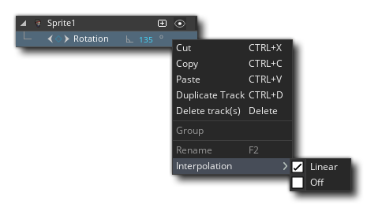
Apart from being able to choose the transition type for parameter tracks, the RMB menu also offers you the following options:
- Cut, Copy, and Paste: These options permit
you to cut/copy/paste asset or parameter tracks.
- Duplicate Track(s): This will create a duplicate of the
currently selected track(s). If this is an
- Delete Track(s): This will delete the selected track or
tracks. If you delete an asset track, then the parameter tracks
associated with it will also be removed, however you can delete
parameter tracks individually.
- Group: Using this option on an empty space in the Track
Panel will create a group folder which you can then use to help
keep your assets in a more orderly format. You can add an asset to
a group by simply clicking on it and dragging it onto the folder.
If you have already selected a track or tracks, then using this
option will not only create a group folder, but it will add the
track(s) to it.
- Rename: You can use this option to rename any asset track or group folder.
An important feature of asset and parameter tracks is the
ability to parent tracks and groups. If you drag an asset
track onto another one in the track panel, the first asset becomes
a child of the asset it was dropped on, which in turn
becomes the parent. All parameter tracks assigned to the
parent asset track will then automatically be applied to the child
asset tracks, so you can have multiple sprites (for example) all
using a single position asset track to move:
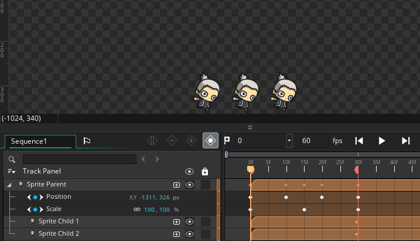
The same can be done using groups. You can create a group
folder by clicking the button at the bottom of the track panel and
then drag and drop the asset tracks you want to be grouped together
on the group folder. These assets will still retain their own
parameter tracks, but you can then give additional parameter tracks
to the group and all the assets in the group will be affected by
these parameter tracks as well as their own individual
parameter tracks.
When working with the track panel the usual keyboard shortcuts
can be used too, ie:  /
/  and the
left mouse button
and the
left mouse button  to select one or more tracks in any
order,
to select one or more tracks in any
order,  and the left mouse button
and the left mouse button
 to select consecutive tracks, and
you can also cut, copy and paste tracks using the
to select consecutive tracks, and
you can also cut, copy and paste tracks using the  /
/
 + "X",
+ "X",  /
/
 + "C" and
+ "C" and  /
/
 + "V" key combinations.
+ "V" key combinations.
That's the basics of using the track editor, but below we go into a bit more detail on what each of the different sections are for and how to use them:
This tab simply shows the name of the sequence that is currently being edited. you can perform a slow double click
on the tab to change the name if required. All sequence names must use alpha-numeric values only, along with the under-bar "_" symbol, and cannot start with a number.
This search box permits you to quickly search through the various tracks of the sequence to find the one you wish to edit. Typing any text here will tell you how many asset tracks have been found with that string in them, and also highlight the arrows to the side of the search box. Clicking these arrows will skip to the first and consecutive assets that fulfill the search criteria.
Each asset that is added to a sequence will be given its own track, and these are listed here. If the asset track has any parameters set for it, then these will also be shown underneath as parameter tracks. You can expand or contract the parameter tracks by clicking on the arrow icon to the left of the track name, and you can edit the track name by using a slow double click
The different types of parameter tracks available are explained in more detail in the section on "Adding Parameter Tracks" further down this page.
Once you have added a parameter track, you can add and remove parameter keys to specific frames to set the value for that parameter. This can be done using the "Record Key" or "Delete key" button (see the section on "Track Key Controls" for more information), or you can do it using the Key Controls on the parameter itself. To use these controls, you need to position the playhead in the Dope Sheet to the frame you want to edit, and then you can click the circular "key" icon on the left of the parameter track. If the frame has no key assigned to it the circle will be "empty" and clicking it will add a new key and allow you to edit the parameter value. If the frame has a key already, then the circle will be "filled" and clicking it will instead remove the key from the frame:
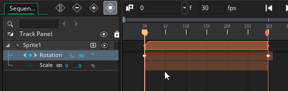
You'll notice too that in the image above you can use the arrow buttons on either side of the parameter key marker to quickly skip between key frames in the dope sheet too, without having to position the playhead manually.
When a parameter track has been added, you can edit the values for some of them by simply setting the playhead in the Dope Sheet to the frame with the key you want to change and then use the different canvas widgets to edit the position, rotation, scale or origin of the asset. These changes will be reflected in the key value for that frame. However not all parameters can be edited this way, or it may not be precise enough for your needs, and in those cases you can edit the parameter value directly by clicking on it in the track and setting it to the required value for the parameter type.
Note that some parameter tracks may have a "link" icon next to their values, which means they can be linked together. This is done by clicking the icon to enable/disable linking, and when enabled, editing one value will also set the other.
In a similar way to regular objects, sequences can have events that can run some code assigned to them. The code is assigned in the form of a scripted function which can take no arguments and will be called when the event is triggered.
Events are added by clicking the Add Event button
which will open the following window:
The events listed here are as follows:
- Create - This event happens when an instance of the sequence is first created, and is the very first thing that happens within a sequence placed in the room through the room editor when a room is entered.
- Destroy - This event is executed when an instance of the sequence is destroyed, and will be run before the Clean Up event (see below).
- Clean Up - This event will be called after any event that removes an instance of the sequence from the room. So, it will be triggered if the sequence is destroyed, if the room ends, or if the game ends, and is designed to perform any task that you need performed once when the sequence instance is removed from the game for any reason. If you have destroyed the sequence instance using, for example, layer_sequence_destroy(), then this event will be called after the Destroy Event (see above).
- Begin Step / Step / End Step - The Step Event is an event that is checked every single step (frame) of the game while the sequence instance exists, and is split into three parts: begin, step and end. For most things the standard step event will be fine to use, but sometimes you want a bit more control over what code runs and at what time, so for that you are provided with the Begin and End step events, and these events will always be triggered in the same order every step (frame) of the game. Important! If the sequence is paused then these events will not be triggered, and when play resumes they will be triggered the next frame after the sequence starts playing again. Also note that the order of events is not influenced by the playhead direction, and even if the sequence is playing backwards, the events will still be run as Begin, Step and End.
- Async Event: This is the equivalent of the object Asynchronous System Event. Important! If the sequence is paused then this event will not be triggered.
Each event can be assigned a single function which will be called when the event is triggered. You can assign the function using the input box for the vent, and clicking the arrow button
will open the script editor for the function to be edited. You can also click the Create New button at the bottom to create a new script resource with "boilerplate" functions already defined and ready to be filled in. Note that you can change the function names to anything you require and do not have to use the predefined names, and you can also remove any function definitions that you don't need. It is important note that functions used for sequence events cannot take any arguments.
Sequence events can also be added and edited using code. For more information please see here.
This section of the track editor has the buttons that are used to for large-scale key control on the specified track or tracks. The controls are as follows:
- This is the "Split selected keys" button. When you have selected one or more track or asset keys in the dope sheet, you can then click this button and they will be split into two separate keys at the time line playhead position:
- This is the "Delete selected keys" button. When you have selected one or more track or asset keys or parameter keys in the dope sheet, you can then click this button and they will be deleted:
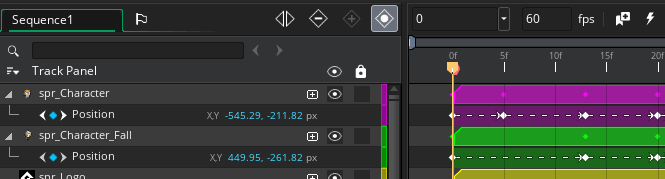
- This is the "Record a new key" button. When you have selected a track or an asset key in the dope sheet and press this button, new parameter keys will be added to the asset track as parameter tracks, and the parameter keys will be added as points in the dope sheet time line at the playhead position:
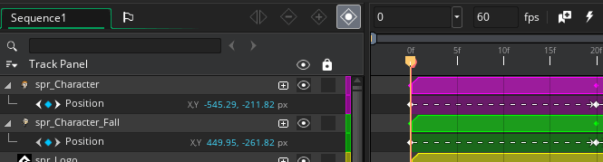
- This is the "Automatically Record Changes" button. When this is enabled, any changes made to the asset within the canvas will be automatically recorded and the appropriate parameter tracks and parameter keys added at the playhead position in the dope sheet. For example, if you move the playhead from frame 0 to frame 10 and then in the canvas move the asset 100 pixels to the right, a parameter track will be added for position, and the parameter keys will be added at frame 0 (the initial position) and at frame 10 (the playhead position) and when you press "Play" on the sequence, the asset will move 100px to the right over ten frames.
Both asset tracks and parameter tracks have a button to toggle track visibility and to lock the track . If you disable the visibility of the track, then it will not be shown when the sequence is run in a room, nor will it be shown in the sequence canvas while testing, and toggling the visibility of an asset track will also toggle the visibility of its parameter tracks. Locking a track simply means that this track will no longer be able to be edited in any way. Note that tracks that are invisible will be drawn faded on the dope sheet, while tracks that are locked will be drawn with an overlay, so you can immediately see what state each track is in: 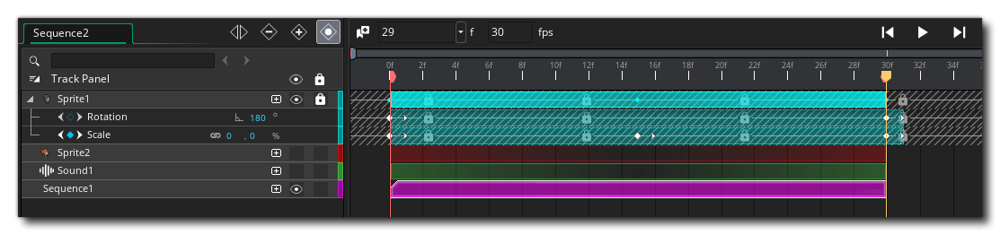
It is worth noting that while locking an asset track will lock the parameter tracks associated with it, you can then unlock the individual parameters as required, and parameters themselves can be locked/unlocked without affecting the status of the main asset track.
Each asset track you create will be assigned a random colour by the IDE to make it easier to identify on the Dope Sheet. This colour can be changed at any time by simply clicking the colour bar for the track and then selecting the colour you want to use from the Colour Picker window that opens. Any colour selected for an asset track will automatically be applied to all the parameter tracks associated, however you can then edit the colour of each parameter track individually so it is different if required. Note that if you then change the asset track colour again, this will override any changes made to the parameter tracks.
The Add Parameter button can be used to add a single parameter track to the selected asset track. As mentioned earlier on this page, parameter tracks can be of various different types depending on the asset that it is related to. Below is a list of all the different parameter tracks available and what they refer to, as well as the assets that they can be applied to:
- Position: This parameter track can be added to any of the four sequence asset types (sprites, objects, sounds or sequences) and is used to set the spacial position within the sequence for the asset. It takes an X and a Y value.
- Rotation: Like the position parameter, the rotation parameter is available for all sequence assets and can be used to set the rotation in degrees for the asset. Keep in mind that GameMaker Studio 2 calculates rotation anti-clockwise, starting with 0° on the right, so 90° is up, 180° is left and 270° is down.
- Origin: The origin parameter is available for sprite, object and sequence assets and can be used to set the X and Y position of the origin of the asset. Changing the origin will affect how the asset is positioned, rotated and scaled.
- Scale: The scale parameter is available for sprite, object and sequence assets and is used to set the horizontal and vertical scale of the asset. This will affect how the asset is rendered in the IDE and at runtime, and is calculated as a scalar value, where 100% is the default asset size, 50% would be half size, and 200% would be double the size. Note that you have the possibility of linking the horizontal and vertical scale values by clicking the "link" button. This means that changing one value will automatically change the other too.
- Image Index and Image Speed: These parameters are only available for sprite and object assets and can be used to change the current animation frame (see the page on the image_index for more information) as well as the current animation speed, which is set using FPS and works the same way as the value you set for the sprite being used in the sprite editor.
- Colour Multiply: This parameter is only available for sprite and object assets and can be used to change the current blend colour for the sprite being drawn. This is the equivalent of setting the image_blend value and any colours set here will be "multiplied" (ie, blended) with the colour of the sprite, and a value of white (#ffffffff) indicates that no blending should take place. Note that when working with this type of track, you can set the colour by manually typing in the hex value, or you can click the colour swatch to open the GameMaker Studio 2 Colour Picker. Note that colours are given in ARGB format, so you can set a value for alpha using this kind of parameter track (the Colour Picker also permits you to set the alpha value). This would be the equivalent of setting the image_alpha for the sprite.
- Volume: The volume parameter only applies to sound asset tracks and can be used to set the gain of the sound (the actual sound asset gain won't be changed, as it's essentially an emitter that is used for the asset track in sequences). The volume value is calculated as a percentage, where 0% is no volume and 100% is full volume.
- Pitch: The pitch parameter only applies to sound asset tracks and can be used to set the pitch of the sound (as with volume, the actual sound asset gain won't be changed, as it's essentially an emitter that is used for the asset track in sequences). The pitch value is calculated as a percentage, 100% is the "natural" pitch of the sound, and less than 100% will lower it while greater than 100% will raise it.
- Falloff: Currently not implemented
The buttons at the bottom of the track editor are the different track actions and can be used for the following purposes:
- - This button will open the Asset Explorer for you to pick an asset to use as a new track. Once selected the asset track will be created and frames added into the Dope Sheet at the current playhead position.
- - When you have selected one or more asset tracks in the track editor, clicking this button will duplicate them (along with any parameter tracks they may contain).
- - Clicking this will create a special clipping mask group where you can give sprites to use as masks and sprites to be masked. More information on this is given further down this page.
- 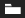 - Clicking this will add a new group folder to the track editor, which can then be used to better organise tracks. You can add a track t a group by dragging the track onto the group folder and you can remove it again by dragging it out of the folder. Note that any asset that is added to a group folder will automatically be assigned the folder colour, although you can then edit the track colour for individual tracks so that it is different if required.
- 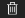 - As you might expect, clicking this will delete the selected track(s). If this is an asset track, then all parameter tracks it contains will also be deleted, although you can use it on selected parameter tracks to delete them on their own without removing the asset tracks they are associated with. If you use this on an empty group folder then the folder will be deleted, however if there are any tracks in the folder you will be shown a warning, as deleting a folder will remove all tracks that are inside of it too.


Clipping Masks
As mentioned in the Track Actions section above, there is an action to create what is called a clipping mask group in the track editor. A clipping mask group contains two sub-sets of assets that can be used as either the subject or the mask of the group. Basically the subject is the asset that is going to be masked, and the mask is the asset that is going to do the masking: 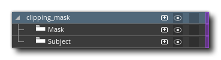
The idea behind using a clipping mask is that you add a subject
sprite, and then a mask sprite, and the mask sprite will "hide"
(mask) the subject. You can then use the mask sprite animation, or
move or scale the mask sprite to change the visibility of the
subject (or parts of the subject). To add a subject and mask,
simply drag the sprite, object or sequence from the asset browser
over the folder that you want to add it to (note that you can have
multiple subjects and masks in one folder):

The mask sprite alpha will be used to "hide" whatever
subject is underneath it, where the 100% alpha (opaque) will mask
completely and 0% alpha (will show it). For example, we have this
sprite for masking:
We can then apply this as a clipping mask to icons to create a
"cooldown" effect, like this:
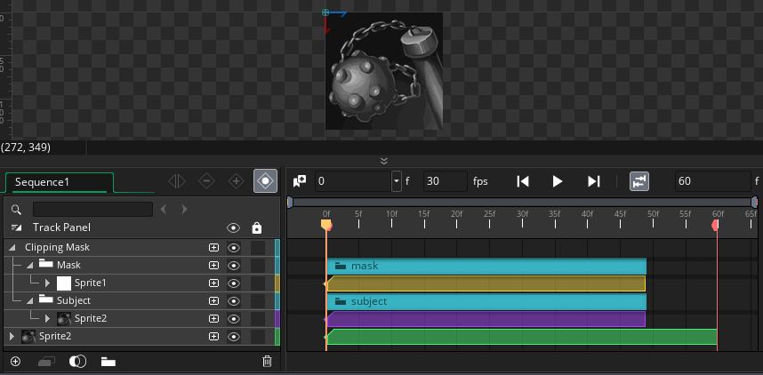
Note that clipping mask groups can be treated as a single item in
the track list and dope sheet, and you can add rotation and
position parameter tracks to the group as a whole. You can
also add the usual parameter tracks to each of the assets used as
the mask or the subject.